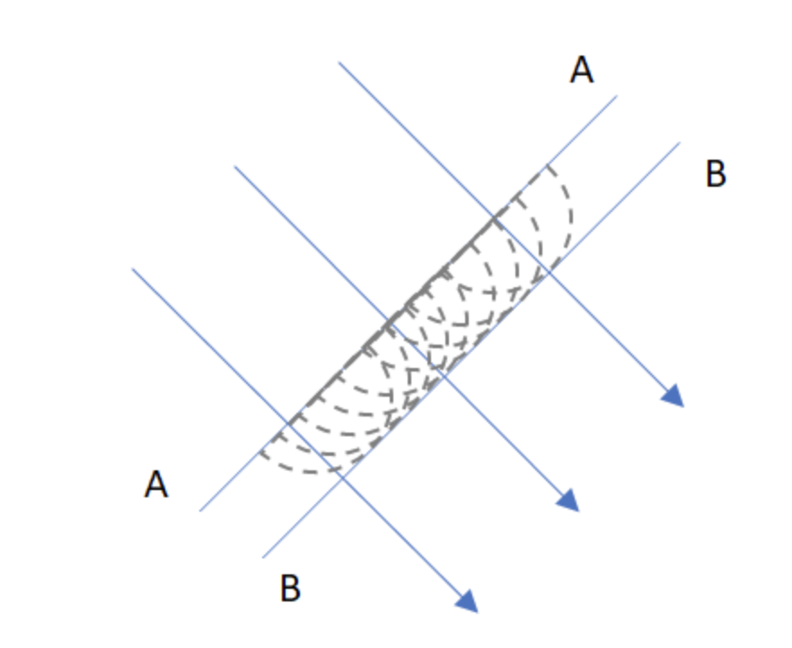
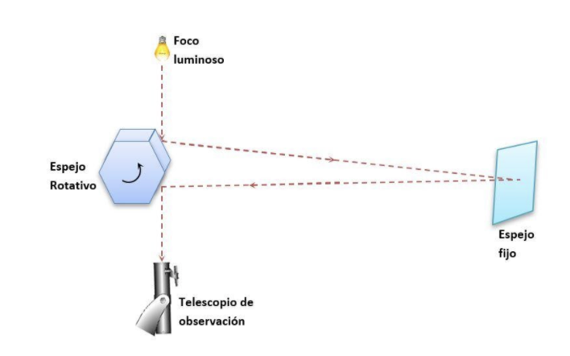
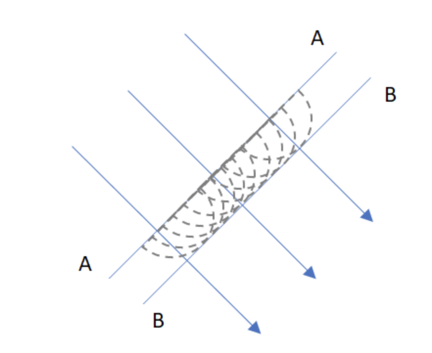
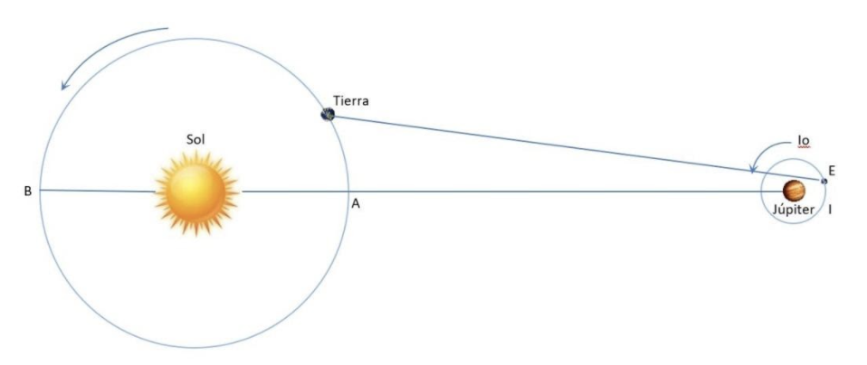
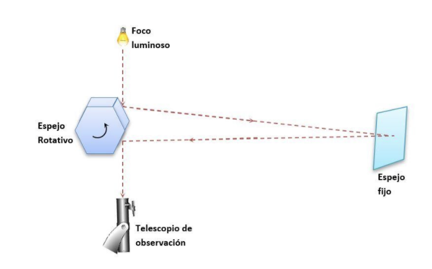

Los fenómenos asociados a la luz tales como reflexión y refracción, que habían sido explicados por Newton (1642-1727) mediante un comportamiento de partícula, son explicados en 1678 por Huygens mediante el modelo ondulatorio. En este modelo los frentes de onda generados en A avanzan formando nuevos frentes de onda en B dado que cada punto de un frente de onda se comporta como una fuente secundaria. Las líneas perpendiculares a dichos frentes de onda son los los rayos que representan cómo se propagan la onda, como se ilustra en la figura.

Fuente: Elaboración propia
Fuente: Elaboración propia

Fuente: Elaboración propia

Fuente: Elaboración propia
Sin embargo, fue hasta 1801 que Thomas Young (1773-1829) demostró la naturaleza ondulatoria de la luz. En 1873 James Clerk Maxwell, quien predijo la existencia de las ondas electromagnéticas, afirmó que la luz era una onda electromagnética de alta frecuencia, y en 1887 Hertz proporcionó información experimental a esta teoría al producir y detectar ondas electromagnéticas.
Por otra parte, otros fenómenos como el efecto fotoeléctrico no son explicados desde la teoría ondulatoria de la luz ya que la energía de un electrón expulsado en este efecto es independiente de la intensidad de la luz incidente, lo que contradice lo predicho por el modelo ondulatorio en el que un haz luminoso de más intensidad debería dar más energía al electrón.
Einstein propuso en 1905 una explicación al efecto fotoeléctrico mediante el modelo de cuantización de la energía que había propuesto Planck en 1900. Este modelo supone que la energía de la onda luminosa está presente en paquetes discretos denominados fotones o cuantos presentes en la luz. Por todo lo anterior, se considera que la luz tiene doble naturaleza, es decir en ocasiones exhibe características de onda y en otras de partícula. Estas propiedades aparentemente contradictorias de onda y partícula se conciliaron a partir de 1930 con el desarrollo de la electrodinámica cuántica, teoría integral que incluye tanto las propiedades ondulatorias como corpusculares. La propagación de la luz se describe mejor con el modelo ondulatorio, pero para comprender la emisión y la absorción se requiere un enfoque corpuscular.
Velocidad de la luz
La velocidad de la luz hace referencia a la distancia que recorre la luz al viajar entre dos puntos en un intervalo de tiempo determinado. Por ejemplo, decimos que la luz del sol tarda aproximadamente 8 minutos y 19 segundos en llegar a la tierra. Se considera que la velocidad de la luz es una constante universal, invariable en el tiempo y el espacio. La luz se desplaza con una rapidez tan alta (con tres dígitos c =3.00 x108 m/s) que realizar su medición no fue tarea sencilla.
Algunos intentos iniciales para medirla no fueron éxitos tales como el propuesto por Galileo. Otros métodos resultaron más éxitos como el propuesto por Roemer en 1675 (Ole Romer 1644 -1710) basado en observaciones astronómicas de Io, una de las lunas de Júpiter; sin embargo, fue el método de Fizeau (H. L. Fizeau 1819-1896) el primero en realizar una medición con técnicas puramente terrestres. En este método se mide el intervalo de tiempo total durante el cual la luz viaja desde cierto punto hacia un espejo distante de ida y regreso. Mediciones similares realizadas por otros investigadores llevaron a precisar el valor de c a su valor actualmente aceptado 299792458 m/s.
Fuente: Elaboración propia

Fuente: Elaboración propia